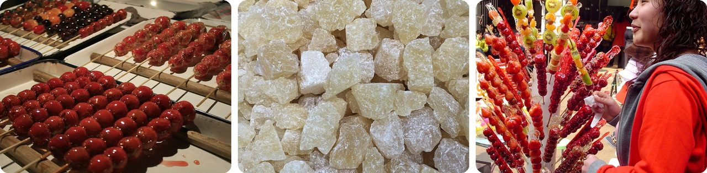
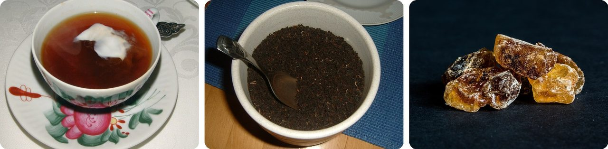

🌍 톱 10 결정 사탕(록 캔디)
2026년 11월 24일
1. 🍬 '캔디'라는 말은 원래 결정 설탕을 부르던 이름이었어요
 록 캔디는 설탕을 큰 결정으로 키운 거예요. 뜨거운 물에 설탕을 아주 많이, 차가운 물이라면 절대 다 못 녹일 만큼 녹여요. 물이 식으면 남는 설탕이 갈 곳이 없어서 실이나 막대에 달라붙어 결정을 만들어요. 6~7일쯤 걸려요.
록 캔디는 설탕을 큰 결정으로 키운 거예요. 뜨거운 물에 설탕을 아주 많이, 차가운 물이라면 절대 다 못 녹일 만큼 녹여요. 물이 식으면 남는 설탕이 갈 곳이 없어서 실이나 막대에 달라붙어 결정을 만들어요. 6~7일쯤 걸려요.
사람들은 이걸 아주 오래전부터 해 왔어요. 800년대 전반, 그러니까 1,100년도 더 전에 이슬람 세계의 작가들이 이렇게 설탕 결정을 키우는 방법을 적어 두었어요.
그리고 반전이 있어요. 영어 'sugar candy'는 옛 프랑스어에서 왔고, 그건 아랍어 qandi에서, 그건 페르시아어 qand('사탕수수 설탕')에서, 아마 산스크리트어 khanda('설탕 한 조각')에서 왔을 거래요. '캔디'가 모든 단것을 뜻하게 된 건 나중 일이에요.
한마디로, 모든 사탕이 결정 사탕의 이름을 빌려 쓰는 셈이에요.
2. 🇯🇵 일본 군대의 비상식량 통조림에는 콘페이토가 들어 있어요
 콘페이토는 일본의 아주 작고 오돌토돌한 별사탕이에요. 지름이 5~10mm쯤으로, 완두콩만 해요. 하나하나가 굵은 설탕 한 알에서 시작해요. 일하는 사람들이 징처럼 생긴 커다란 뜨거운 통에 설탕 알갱이를 넣고 돌리면서 시럽을 계속 부어 주면, 하루하루 조금씩 커져요.
콘페이토는 일본의 아주 작고 오돌토돌한 별사탕이에요. 지름이 5~10mm쯤으로, 완두콩만 해요. 하나하나가 굵은 설탕 한 알에서 시작해요. 일하는 사람들이 징처럼 생긴 커다란 뜨거운 통에 설탕 알갱이를 넣고 돌리면서 시럽을 계속 부어 주면, 하루하루 조금씩 커져요.
아주 느려요. 한 번 만드는 데 7~13일이 걸려요. 그래서 지금도 장인들이 손으로 만들어요.
일본 군대의 비상식량에는 딱딱하고 마른 빵과 함께 콘페이토가 들어 있어요. 규칙에 색깔까지 정해져 있어요. 흰색 8개, 빨간색 3개, 노란색 2개, 초록색 2개예요. 사탕을 먹으면 입에 침이 고여서 마른 빵을 씹기가 쉬워져요.
할 일이 있는 사탕이라고 생각하면 돼요.
3. 🇮🇷 이란에서는 차에 사프란 결정 사탕 막대가 따라 나와요
 이란에서 차에 단맛을 내는 가장 흔한 방법은 나밧(nabat)이에요. 막대나 실에 키운 결정 사탕이죠. 가장 인기 있는 맛은 사프란인데, 결정을 금빛으로 만들고 맛을 살짝 쌉쌀하게 해요. 차와 함께 조금씩 갉아 먹거나, 차에 넣어서 달게 해요.
이란에서 차에 단맛을 내는 가장 흔한 방법은 나밧(nabat)이에요. 막대나 실에 키운 결정 사탕이죠. 가장 인기 있는 맛은 사프란인데, 결정을 금빛으로 만들고 맛을 살짝 쌉쌀하게 해요. 차와 함께 조금씩 갉아 먹거나, 차에 넣어서 달게 해요.
이란은 이걸 엄청 많이 만들어요. 대부분 라자비호라산 주에서 나오는데, 2020년대에 그곳에서 해마다 21만 톤 넘게 만들었어요. 에펠탑 20개쯤 되는 무게예요.
바로 옆 중앙아시아에서는 같은 사탕을 노브봇(novvot)이라고 불러요. 우즈베키스탄에서는 가끔 물 대신 포도 주스로 만들고, 결정이 사흘 동안 자라요. 유네스코는 이걸 우즈베키스탄 문화유산의 일부로 올렸어요.
절대 씻을 필요 없는 설탕 숟가락이에요.
4. 🇨🇳 중국 전설에 따르면 빙탕이 황제의 아픈 후궁을 낫게 했어요

탕후루는 대나무 꼬치에 꿴, 반짝반짝 설탕을 입힌 산사나무 열매예요. 중국 북쪽의 대표 길거리 간식이죠. 다른 이름은 빙탕후루(冰糖葫芦, bīngtáng húlu)예요. 빙탕(bīngtáng)은 결정 설탕, 후루(húlu)는 호리병박이라는 뜻인데, 꼬치가 울퉁불퉁 호리병박처럼 생겨서 그래요.이 전설은 약 800년 전 송나라 때로 거슬러 올라가요. 황제가 가장 아끼던 후궁이 병이 나서 아무것도 먹지 않았어요. 한 의사가 요리사들에게 산사나무 열매를 빙탕과 함께 졸이라고 하고, 후궁에게 매 끼니 전에 5~10개씩 먹게 했어요. 며칠 뒤 후궁은 나았고, 사람들은 그 열매를 꼬치에 꿰어 길에서 팔기 시작했어요.
옛 중국에서 빙탕은 부잣집만 살 수 있는 사치품이었어요. 지금 중국에서는 차, 달콤한 수프, 요리에 두루 쓰는 평범한 부엌 재료예요.
다시 말해, 궁중 약이 길거리 간식이 된 거예요.
5. 🇩🇪 동프리슬란트에서는 차를 절대 젓지 않아요

동프리슬란트는 독일 북서쪽 바닷가 지역인데, 차라면 정말 사족을 못 써요. 독일에 들어오는 차의 거의 75%를 이곳에서 마셔요. 그리고 마시는 방법에도 엄격한 규칙이 있어요.먼저 클룬트예(Kluntje)라는 하얀 결정 설탕 한 덩어리를 빈 잔에 넣어요. 그 위로 뜨겁고 진한 차를 부어요. 그다음 진한 크림 한 숟가락을 위에 올리면, 뵐크예(Wölkje)라는 '구름'처럼 퍼져요. 크림은 구름, 차는 물, 설탕은 땅이에요.
그리고 젓지 않고 마셔요. 그러면 세 층을 맛보게 돼요. 처음엔 크림, 다음엔 차, 마지막엔 바닥의 단맛이에요. 저으면 다 섞여서 한 가지 맛이 되니까, 그건 틀린 방법이에요. 클룬트예는 아주 천천히 녹아서 한 덩어리로 여러 잔을 달게 할 수 있어요.
한마디로, 찻잔 하나에 담긴 3코스 요리예요.
6. 🇬🇧 블랙풀 '록' 사탕의 글자는 순서대로 만들지 않아요
 영국 바닷가의 '록(rock)'은 결정 사탕과는 다른 사탕이에요. 보통 박하 맛인 딱딱한 설탕 막대인데, 마을 이름이 처음부터 끝까지 관통하고 있어서 한 입 먹을 때마다 글자가 보여요. 1830년대에 모어캠이 글자가 들어간 록을 처음 만든 마을이 됐어요.
영국 바닷가의 '록(rock)'은 결정 사탕과는 다른 사탕이에요. 보통 박하 맛인 딱딱한 설탕 막대인데, 마을 이름이 처음부터 끝까지 관통하고 있어서 한 입 먹을 때마다 글자가 보여요. 1830년대에 모어캠이 글자가 들어간 록을 처음 만든 마을이 됐어요.
글자 하나하나는 처음에 엄지 지문만 한 크기로, 색깔 설탕 줄과 흰 설탕 줄로 만들어요. 철자 순서대로 만들지 않아요. B, L, K 같은 '네모' 글자를 먼저 만들어요. 모양이 잘 안 무너지거든요. O, C 같은 둥근 글자는 처지지 않게 마지막에 만들어요.
글자들을 흰 가운데 부분 둘레에 놓고, 아직 따뜻한 거대한 막대로 감싸요. 두 손으로 감싸 쥘 수도 없을 만큼 굵어요. 그러면 일꾼이 그걸 길고 가는 줄로 쭉 늘이고, 글자는 최종 크기로 조그맣게 줄어들어요. 글자가 든 록은 지금도 전부 손으로 만들어요.
단어를 하나 쓴 다음, 그걸 쭉 늘여서 사탕으로 만든다고 생각하면 돼요.
7. 🏴 에든버러 록은 깜빡 잊어버린 덕분에 발견됐다고 해요
 에든버러 록은 전혀 딱딱하지 않아요. 부드럽고 바스러지는 사탕으로, 설탕, 물, 주석영(크림 오브 타르타르)으로 만들고, 생강이나 레몬 같은 맛의 파스텔색 막대 모양이에요.
에든버러 록은 전혀 딱딱하지 않아요. 부드럽고 바스러지는 사탕으로, 설탕, 물, 주석영(크림 오브 타르타르)으로 만들고, 생강이나 레몬 같은 맛의 파스텔색 막대 모양이에요.
1800년대에 알렉산더 퍼거슨이 처음 만들었는데, 사람들은 그를 '스위티 샌디'(사탕 샌디)라고 불렀어요. 유명한 이야기에 따르면, 그는 몇 달 동안 잊고 있던 사탕 한 판을 발견했대요. 사탕은 바싹 말라 있었는데, 하나 먹어 보니 정말 맛있었대요. 이게 진짜인지는 아무도 몰라요.
확실한 건 이거예요. 사탕이 너무 잘 팔려서 그는 큰 부자가 되어 고향 작은 마을 둔으로 돌아갔어요. 그곳의 기념판에 따르면, 그는 자기가 태어난 거리의 대부분을 사들였고, 그 거리는 '스위티 레인'(사탕 골목)으로 불리게 됐어요.
먹을 수 있는 행복한 실수예요.
8. 🇮🇳 델리의 한 과자 가게는 1790년부터 결정 설탕 과자를 팔았어요
 인도에서는 결정 설탕을 미스리(mishri)라고 불러요. 사탕처럼 먹거나 우유와 차를 달게 하는 데 써요. 코아(khoya, 걸쭉해질 때까지 졸인 우유)와 함께 우유 과자로 만들기도 하는데, 미스리 마와, 다른 이름으로 칼라칸드가 그런 과자예요.
인도에서는 결정 설탕을 미스리(mishri)라고 불러요. 사탕처럼 먹거나 우유와 차를 달게 하는 데 써요. 코아(khoya, 걸쭉해질 때까지 졸인 우유)와 함께 우유 과자로 만들기도 하는데, 미스리 마와, 다른 이름으로 칼라칸드가 그런 과자예요.
델리의 과자 가게 간테왈라 할와이(Ghantewala Halwai)는 1790년에 미스리 마와를 팔면서 시작했어요. 230년도 더 전이에요. 지금은 미스리로 만든 과자를 40가지나 팔아요.
이런 우유 과자는 인도 북부와 서부, 그러니까 델리, 라자스탄, 펀자브, 구자라트 같은 곳에서 가장 인기가 많아요.
다시 말해, 한 가게가 같은 과자를 230년 넘게 팔고 있는 거예요.
9. 🇺🇸 미국 최초의 상업용 사탕은 배가 난파된 뒤 탄생했어요
 1806년, 스펜서 가족은 영국에서 매사추세츠주 세일럼으로 이사했는데, 배가 난파되는 바람에 가진 게 거의 없어졌어요. 새 이웃들이 물건을 모아 줬고, 그중에는 설탕 한 통도 있었어요. 스펜서 부인이 사탕을 잘 만든다고 소문났거든요.
1806년, 스펜서 가족은 영국에서 매사추세츠주 세일럼으로 이사했는데, 배가 난파되는 바람에 가진 게 거의 없어졌어요. 새 이웃들이 물건을 모아 줬고, 그중에는 설탕 한 통도 있었어요. 스펜서 부인이 사탕을 잘 만든다고 소문났거든요.
부인은 '지브롤터'라는 레몬 맛과 박하 맛 딱딱한 사탕을 만들어 마을 제1교회 계단에서 팔았어요. 너무 잘 팔려서 말과 마차를 사서 이웃 마을까지 팔러 다녔어요. 지브롤터 록은 미국에서 처음으로 상업적으로(팔기 위해, 사업으로) 만든 사탕으로 불려요.
딱딱한 사탕은 마른 곳에 두면 아주 오래가서, 선장들이 지브롤터를 세계 곳곳의 항구로 싣고 갔어요. 세일럼의 예 올드 페퍼 컴퍼니(Ye Olde Pepper Companie)는 지금도 이 사탕을 팔아요.
그러니까 미국의 사탕 사업은 이웃이 준 선물에서 시작된 거예요.
10. 🎵 '빅 록 캔디 마운틴'은 원래 집을 떠나는 이야기를 담은 노래였어요
 'The Big Rock Candy Mountains'(커다란 사탕 산)는 호보(hobo), 그러니까 화물 열차를 타고 떠돌던 일꾼이 꿈꾸는 세상을 노래한 포크송이에요. 해리 매클린톡은 1895년에 이 노래를 썼다고 했고, 1928년에 녹음했어요.
'The Big Rock Candy Mountains'(커다란 사탕 산)는 호보(hobo), 그러니까 화물 열차를 타고 떠돌던 일꾼이 꿈꾸는 세상을 노래한 포크송이에요. 해리 매클린톡은 1895년에 이 노래를 썼다고 했고, 1928년에 녹음했어요.
그가 1890년대에 길거리에서 부르던 처음 버전은 더 어두웠어요. 한 아이가 사탕 산 이야기에 넘어가 떠돌이 생활에 끌려드는 내용이었어요. 그는 녹음하기 전에 가사를 깨끗하게 고쳤어요.
그 뒤 아이들을 위해 또 한 번 고쳐졌어요. 어린이 버전에서는 '담배 나무'가 박하사탕 나무로, 술이 흐르는 시냇물이 레모네이드로, 위스키 호수가 탄산음료 호수로 바뀌었어요. 1949년 벌 아이브스가 부른 어린이 버전이 이 노래를 유명하게 만들었어요.
어른의 노래가 사탕 나라 자장가가 된 거예요.
재미있는 사실
콘페이토는 일본의 문을 여는 데 도움을 준 적도 있어요. 1569년, 포르투갈 선교사 루이스 프로이스는 무장 오다 노부나가에게 콘페이토가 든 유리병을 선물하고 기독교를 전할 허락을 받으려 했어요. 몇백 년 뒤, 이 사탕이 얼마나 사랑받았는지 일본어에서는 차이콥스키의 발레 '호두까기 인형'에 나오는 사탕 요정이 '콘페이토노 세이'(金平糖の精), 즉 '콘페이토 요정'이 됐어요. 설탕 자두부터 마지팬까지, '호두까기 인형' 속에 숨은 과자들은 다음에 탐험해 볼 만한 큰 세계예요.
사진 출처 (Wikimedia Commons)
- #1: Kandiszucker -- 2018 -- 3588.jpg by Dietmar Rabich, CC BY-SA 4.0
- #1: Rock-Candy-Sticks.jpg by Evan-Amos, CC BY-SA 3.0
- #1: Rock candy (flickr) by Biker Jun, CC BY-SA 2.0
- #2: Konpeito Candy.jpg by Islandsislands, CC0
- #2: #012 Konpeito taken by EX-Z40 (flickr) by aki.sato, CC BY-SA 2.0
- #2: Konpeito, Nishiki Market.jpg by Owleksandra, CC BY-SA 4.0
- #3: Iranian nabat.jpg by Teardrops777, CC BY 4.0
- #3: Saffron rock candy.jpg by Rye-96, CC BY-SA 4.0
- #3: Tea time at historic Chah-e Haji Mirza Café in Isfahan. Persian tea served with goshe fil and nabat.jpg by EiersalatmitGurken, CC0
- #4: TangHuLu.JPG by Popo le Chien, CC0
- #4: Guangxi old rock candy.jpg by Fumikas Sagisavas, CC0
- #4: Tanghulu-shanghai.jpg by Zhu Jian / Flickr user: zhu4905jian ( https://www.flickr.com/photos/7672101@N06/ ), CC BY 2.0
- #5: Tee mit sahnewolke.JPG by Ke.We., CC BY 3.0
- #5: Ostfriesentee.jpg by Frank van Anken, CC BY-SA 3.0
- #5: Kandiszucker -- 2018 -- 3590.jpg by Dietmar Rabich, CC BY-SA 4.0
- #6: Blackpool Rock (15107520364).jpg by Hazel Scott from Sheffield, UK, CC BY 2.0
- #6: Blackpool Rock (flickr) by Kate C Hopkins, CC BY 2.0
- #6: Brighton Rock (6950629923).jpg by Paul Hudson from United Kingdom, CC BY 2.0
- #7: Edinburgh Rock.jpg by The original uploader was Mebanana at English Wikipedia., Public domain
- #7: Ferguson's Edinburgh Rock advertisement (1982).JPG by Kim Traynor, CC BY-SA 4.0
- #7: Sweetie Lane heritage plaque.jpg by LocalMapEditor, CC BY-SA 4.0
- #8: Fennel seeds and rock sugar, Indian aftermint.jpg by Connie Ma from Chicago, United States of America, CC BY-SA 2.0
- #8: Misri.JPG by Miansari66, Public domain
- #8: Kalakand2.JPG by Pradeep717, CC BY-SA 3.0
- #9: Gibralters Candy Wrapper.jpg by Eanalla, CC0
- #9: Ye Olde Pepper Company, 122 Derby St, Salem (493760) (flickr) by Bob Linsdell, CC BY 2.0
- #9: Ye Olde Pepper Companie (flickr) by Kate C Hopkins, CC BY 2.0
- #10: Big Rock Candy Mountain Marysvale Utah 19970724.jpg by Jstuby, CC0
- #10: Big Rock Candy Mountain (19546490).jpg by Liji Jinaraj from San Francisco, USA, CC BY-SA 2.0
- #10: Big Rock Candy Mountian - panoramio.jpg by hakkun, CC BY-SA 3.0


.jpg){kind=link}
.jpg){kind=link}

.JPG){kind=link}


.jpg){kind=link}